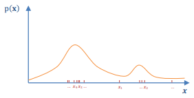
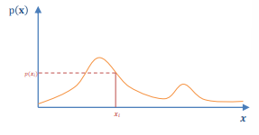
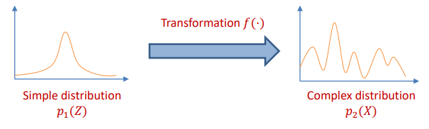
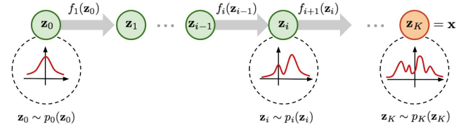
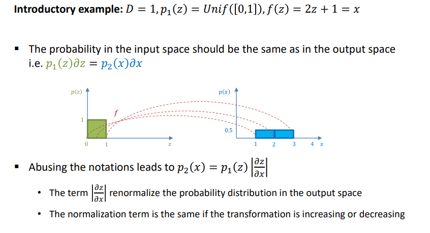
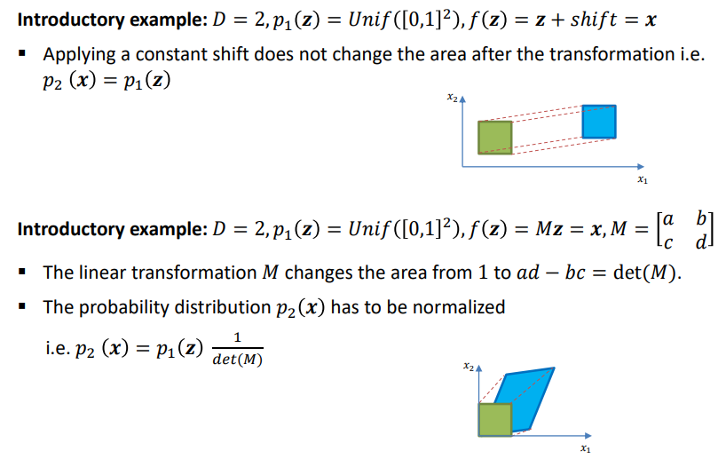
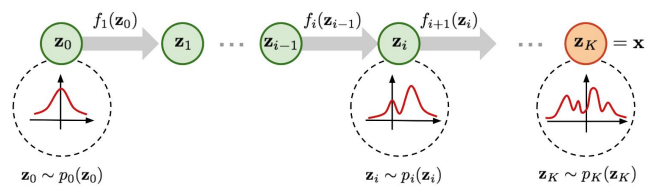

We assume that the data x follows a probability distribution p(x) i.e.
p(x) where x=⎣⎡x1⋮xD⎦⎤
We can do two interesting things with a distribution:
Data sampling: generate data sample xi following the distribution p(x)

Density evaluation: given any xi, compute the probability density at this point p(xi)

Normalizing Flows (NF) can model flexible distributions for data sampling and density evaluation.
Normalizing Flows intuition:
Model a complex distribution by applying a transformation on a simple distribution

idea
Normalizing Flows are based on the change of variables formula
It transforms a variable z into another variable x by via a transformation f i.e. f(z)=x
It is particularly useful to simplify computations when working with distributions (or integrals)
The name: "Normalizing flow"
A NF transforms a simple distribution (e.g. uniform, Gaussian) into a complex distribution. For some Normalizing Flows the universality theorem has been proven.
NFs stack valid transformations to model a complex mapping between the input and output space. The input variable flows through the transformations.
The change of variable formula allows to compute the distribution of the output space based on the distribution in the input space. The determinant terms normalize the distribution in the output space. (so that the distribution integrates to 1 —>valid distribution)

Change of variables formula
Change of variables formula (General case): if D∈N,p1(z) a D-dimensional distribution, f(z)=x an invertible and differentiable transformation, then distribution p2(x) is
p2(x)=p1(f−1(x))⋅∣∣det(∂x∂f−1(x))∣∣
The determinant term accounts for the distortion扭曲 rate of the transformation (see introductory examples). If it is equal to 1,p2(x) and p1(z) have the same " volume " at this point i.e. p2(x)=p1(f−1(x)).
It considers that the transformation is locally linear (see last example)
The term ∂x∂g(x) is called Jacobian of g; here: a D×D matrix
We have ∂x∂f−1(x)=(∂z∂f(z))−1.
The transformation f should be valid (invertible and differentiable).
examples
example1

example2

log version
Change of variables formula (log version): if D∈N,p1(z) a D-dim. distribution, f(z)=x an invertible and differentiable transformation, then p2(x) is
Sufficient conditions for a valid transformation f
Invertibility:
The input and output space of the mapping should have the same dimension D.
If D=1, it is sufficient that f is strictly monotonic (increasing or decreasing).
If the transformation f is linear, its determinant should be nonzero i.e. det(f)=0
Differentiability:
Both the transformation f and its inverse f−1 are continuously differentiable,
i.e. the Jacobian ∂x∂f−1(x) exists at any point x.
Note: Differentiability is a sufficient condition; in theory, the mapping f does not have to be differentiable everywhere, we can even have discontinuous; in practice we usually use only differentiable transformation
Stacking transformations fi
We can apply the change of variables formula multiple times:
The first variable z0 is transformed by z1=f1(z0)
The variable zi−1 is transformed by zi=fi(zi−1)
The last variable zK−1 is transformed by x=zK=fK(zK−1)

The change of variables formula becomes:
pK(x)=p0(z0)i=1∏K∣∣det(∂zi∂fi−1(zi))∣∣
forward and reverse parametrization
The change of variables formula does a mapping between two distributions
p2(x)=p1(f−1(x))⋅∣∣det(∂x∂f−1(x))∣∣
How to use the change of variables formula to evaluate p2(x) at any point x ?